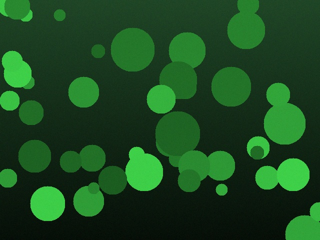

Tent
Temperature
--
Humidity
--
Light
--
Pressure
--
Altitude
--
Light Cycle
--
Determining schedule…
Latest Image

Timelapse Controls
Capture grabs a single frame. Build Timelapse compiles recent frames into a video.
Sun Position
--°
--°
Day Progress--%
Sun Above Horizon--%
Overview
Daily Min/Max/Avg (24h)
Temp
--
-- / --
Humidity
--
-- / --
Light
--
-- / --
Pressure
--
-- / --
Altitude
--
-- / --
Sensor Uptime / Last Seen
Loading…
Storage Usage
Captures--
Timelapses--
Database--
Disk Used--
Disk Free--
Temp History (24h)
Humidity History (24h)
Light History (24h)
Pressure History (24h)
Altitude History (24h)
Light Schedule Timeline (24h)
Now
00:0006:0012:0018:0024:00
--
Latest Timelapse
No timelapse available yet.